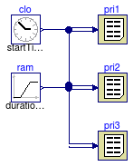

This package contains examples for the use of models that can be found in Buildings.Utilities.Reports.
Extends from Modelica.Icons.ExamplesPackage (Icon for packages containing runnable examples).
| Name | Description |
|---|---|
| Test model for printer |
 Buildings.Utilities.Reports.Examples.Printer
Buildings.Utilities.Reports.Examples.Printer
model Printer "Test model for printer" extends Modelica.Icons.Example;Buildings.Utilities.Reports.Printer pri1( header="time ramp", nin=2); Modelica.Blocks.Sources.Clock clo; Modelica.Blocks.Sources.Ramp ram; Buildings.Utilities.Reports.Printer pri2( header="time ramp", nin=2, configuration=2); Buildings.Utilities.Reports.Printer pri3( header="time ramp", nin=2, configuration=3); equationconnect(clo.y, pri1.x[1]); connect(ram.y, pri1.x[2]); connect(clo.y, pri2.x[1]); connect(ram.y, pri2.x[2]); connect(clo.y, pri3.x[1]); connect(ram.y, pri3.x[2]); end Printer;